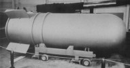
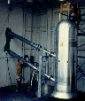

Last updated 21 October 1997
| B-41 (38 K) | Bassoon Prime Device (110 K) |
The Mk/B-41 was the highest yield nuclear weapon ever deployed by the U.S. It was also the only three-stage thermonuclear weapon ever developed by the U.S., and it achieved the highest yield-to-weight ratio of any U.S. weapon design.
| Yield | 25 Megatons |
|---|---|
| Weight | 10,670 lb |
| Length | 12 ft. 4 in (148 in) |
| Diameter (body) | 52 in |
| Diameter (tail fin) | 74 in |
| Number Manufactured | About 500 |
| Manufactured | September 1960 to June 1962 |
| Retired | November 1963 to July 1976 |
Three stage radiation implosion weapon
Deuterium-tritium boosted primary.
Fusion stages presumalby use Lithium-6 (95% enrichment) deuteride fusion fuel.
The B-41 was deployed in a a "dirty" version (the Y1, with a U-238 encased tertiary stage) and a "clean" version (the Y2, with a lead encased tertiary stage). It may be that both used a secondary with a lead fusion tamper.
There are actually two reported yields for this bomb, "less than 10 Mt" and 25 Mt. It is possible that the 25 Mt yield applies only to the dirty Y1 version, with the clean Y2 version having the lower yield.
According to Dr. Theodore Taylor (physicist and former weapons designer), the practical limit for nuclear weapon yield to weight ratio is about 6 Kt/kg. Using the deployed weapon weight (10,670 lb), and a yield of 25 Mt, the Mk-41 achieved 5.2 Kt/kg. If we look at the test devices fired in Hardtack I however (see below), which lack such weighty and in principle unnecessary things as parachutes, we see weights 8,752 - 9,723 lb. Taylor's maximum achievable yield-to-weight ratio of 6 Kt/kg corresponds to a device weight of 9,190 lb; well within the weight range of these devices.
Strategic bomber - most recently the B-52G (internal bomb bay)
Unknown
"Full Fuzing Options" (FUFO), options probably selected on ground prior to mission.
Five fuzing options:
Parachutes used: parachutes 4-5 ft diameter pilot chute, and a 16.5 ft diameter main ribbon chute for high-speed stabilization.
The B-41 program originated in 1955 when the Air Force issued a requirement and a feasibility study for a Class "B" (10,000 lb), 62 inch diameter high yield thermonuclear weapon. UCRL proposed adapting an experimental three-stage thermonuclear system they were developing, which was subsequently scheduled for test-firing during Operation Redwing in 1956.
Two version of the proposed UCRL test device, named "Bassoon" and "Bassoon Prime", were test-fired in "clean" and "dirty" configurations during the Zuni and Tewa shots of Redwing.
The Bassoon device fired in Redwing Zuni (27 May 1956) was 39 inches in diameter, 135.5 inches long, and weighed 12,158 lbs. The predicted yield for Zuni was 2-3 Mt, it achieved 3.5 Mt. This device used a lead fusion tamper and was quite clean, with 85% of the energy coming from fusion, and only 15% from fission.
The Bassoon Prime device fired in Redwing Tewa (20 July 1956) was 39 inches in diameter, and 135.5 inches long, and weighed 15,735 lb. The predicted yield for Tewa was was 6-8 Mt, the actual yield was 5 Mt. In contrast to Zuni, Tewa used an uranium fusion tamper and was quite dirty, with only 13% of the energy coming from fusion, and 87% from fission. This device produced a fusion yield of only 650 Kt compared to the 3 Mt of Zuni.
Both were experimental "proof of concept" systems only, not test version of actual designs intended for deployment. Redesign to meet military requirements and additional testing was thus required, which was carried out in Operation Hardtack Phase I in 1958.
In November 1956 the feasibility study was completed and the designation TX/XW-41 for a bomb and a missile warhead version was assigned. On January 28, 1957, the DOD formally requested that the AEC develop a new Class "B" weapon using the UCRL design. The military characteristics for the bomb and warhead were approved in mid-February, and development engineering of the designs began. In June the proposed ordnance characteristics of the TX-41 bomb and XW-41 warhead were accepted by the Special Weapons Development Board; the ICBM warhead application was canceled at the end of July.
A test of the boosted TX/XW-41 warhead primary and secondary in a bomb mockup, was fired in Plumbbob Smoky at the NTS on 31 August 1957. The device yielded 44 Kt (predicted yield was 48 Kt, range 45-50 Kt); it measured 50" in diameter and 126.2" in length and weighed 9,408 lbs. The test included some thermonuclear yield.
Drop testing of the TX-41 ballistic shape was conducted between December 1957 and December 1959 at the AEC's Tonopah (Nevada) and Salton Sea (California) test ranges.
Prototypes of the TX-41 bomb, all of them clean variants, were fired during the Sycamore, Poplar and Pine shots of Operation Hardtack Phase I at the PPG between May 31 and July 27, 1958.
The Sycamore shot (31 May 1958) used a two-stage clean version of the TX-41. The predicted yield was five megatons, of which just 200 kilotons was to be fission yield. The device fizzled though, with a total actual yield of only 92 Kt although low level burning was detected in the second stage. The test device was 50 inches in diameter by 112.6 inches long and weighed 9,723 lbs.
The Poplar shot (12 July 1958) was a repeat test of the two-stage variant. This device had a diameter of 48.2 inches, a length of 112.1 inches, and a weight reduced of 9,316 lbs. The Poplar device was predicted to yield either 5-10 Mt, of which only 450 Kt was to be fission yield. This test was successful, with a yield of 9.3 Mt (the largest of Hardtack I, and the fifth largest U.S. test ever).
The Pine shot (26 July 1958) used a three-stage configuration. This device had a diameter of 50 inches, a length of 112.6 inches, and a weight reduced of 8,752 lbs. The predicted total yield was 4-6 Mt, only 200 Kt was to be from fission. Actual yield was only 2 Mt. The device is said to have had dual-primaries.
The ordnance characteristics of the TX-41 were revised and accepted by the SWDB in mid-October 1958. Production engineering of the TX-41 started soon afterwards.
| 1955 | Air Force issued a requirement and a feasibility study for a Class "B" weapon (high megaton range, 10,000 lb, 62 inch diameter or less) |
|---|---|
| 1956 | |
| 27 May | Bassoon device fired in Redwing Zuni (3.5 Mt), test firing of UCRL "clean" 3-stage concept for class "B" requirement |
| 20 July | Bassoon Prime device fired in Redwing Tewa (5 Mt), test firing of UCRL "dirty" 3-stage concept for class "B" requirement |
| November | Feasibility study completed and designation TX/XW-41 assigned |
| 1957 | |
| 28 January | DOD formally requested that the AEC develop the TX-41 weapon using the UCRL design, development engineering begins |
| June | Proposed ordnance characteristics of the TX-41 bomb accepted |
| 31 August | Plumbbob Smoky shot: test of the boosted TX-41 warhead primary and secondary in a bomb. Yield 44 Kt, test included some thermonuclear yield. |
| 1958 | |
| May-July | Prototype tests of the Tx-41 weapon fired in Operation Hardtack Phase I at Enewetak: 31 May (GMT) Sycamore - two-stage clean version of the TX-41. Predicted yield 5 Mt total, 200 Kt fission. The device fizzled with total actual yield of 92 Kt although low level burning was detected in the second stage. 12 July (GMT) Poplar - repeat test of the two-stage variant. Predicted yield 5-10 Mt, 450 Kt fission. Successful, with a yield of 9.3 Mt. 26 July (GMT) Pine - used a three-stage configuration. Predicted total yield 4-6 Mt, 200 Kt fission. Actual yield was 2 Mt. The device said to have had dual-primaries. |
| October | Ordnance characteristics revised and accepted by SWDB; production engineering of the TX-41 begins |
| 1960 | |
| September | Early production of the Mk-41 Mod 0 bomb begun |
| 1962 | |
| June | Production terminated |
Early production of the Mk-41 Mod 0 bomb began in September 1960; by June 1962, approximately 500 units had been manufactured. These weapons were retired between November 1963 and July 1976 as the more-versatile Mk-53 replaced them in the stockpile.
{kind=link}
{kind=link}